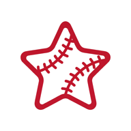

주식회사 톰즈워커즈는 소프트웨어를 만듭니다. 만들어서 내보내고, 내보낸 뒤에도 계속 떠 있게 합니다.
소프트웨어를 잘 만드는 방법은 아직 잘 모르겠습니다. 다만 지키기로 정한 것은 셋 있습니다.
만들 때마다 [이게 없어도 되나]를 먼저 봅니다. 계정, 개인정보, 광고 식별자, 분석 도구 — 없어도 되면 넣지 않습니다. 싣지 않은 것은 고장 나지 않습니다.
문서에 적힌 것과 코드가 하는 일이 같아야 합니다. 이용약관, 개인정보 처리방침, 스토어에 신고하는 항목까지 실제 동작에 맞춥니다. 문서가 물건보다 좋게 적히는 일은 없습니다.
만드는 데 걸리는 시간보다 떠 있게 하는 시간이 깁니다. 내보내고 나서 고치고 지키는 것까지를 일로 칩니다. 띄워 놓고 손 떼지 않습니다.
지금 물에 떠 있는 것은 하나입니다. 늘어나면 여기에 더합니다.

팀이 아니라 선수를 따라가는 야구 앱입니다. 팔로우한 선수의 출전 예고, 타석과 등판 결과, 경기 종료를 알림으로 알려줍니다. 시즌 기록과 오늘 경기 상황도 함께 보여줍니다.
iOS 앱을 준비하고 있습니다.
mybaseballstar.app제안도, 버그 제보도, 그냥 하는 이야기도 좋습니다.
tom@tomsworkers.io